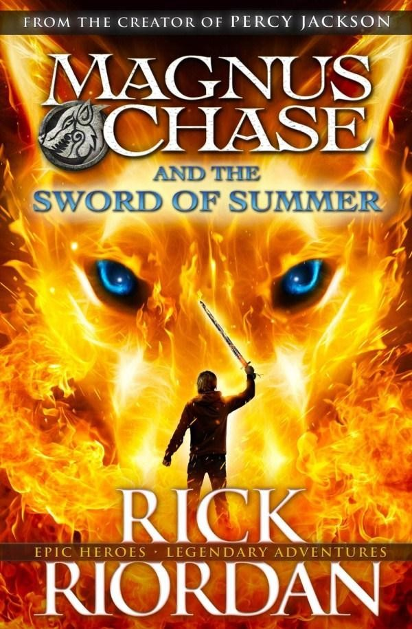

|  | Sword Of Summer |
$19.99 now $15.99 |
DescriptionThe first book in the incredible new series from the author of Percy Jackson, the Kane Chronicles and Heroes of Olympus.
Magnus Chase has always been a troubled kid. Since his mother's mysterious death, he's lived alone on the streets of Boston, surviving by his wits, keeping one step ahead of the police and the truant officers. One day, he's tracked down by an uncle he's never met - a man his mother claimed was dangerous. His uncle tells him an impossible secret:
Magnus is the son of a Norse god. The Viking myths are true. The gods of Asgard are preparing for war. Trolls, giants and worse monsters are stirring for doomsday. To prevent Ragnarok, Magnus must search the Nine Worlds for a weapon that has been lost for thousands of years. |
Product DetailsISBN: 9780751561746 |